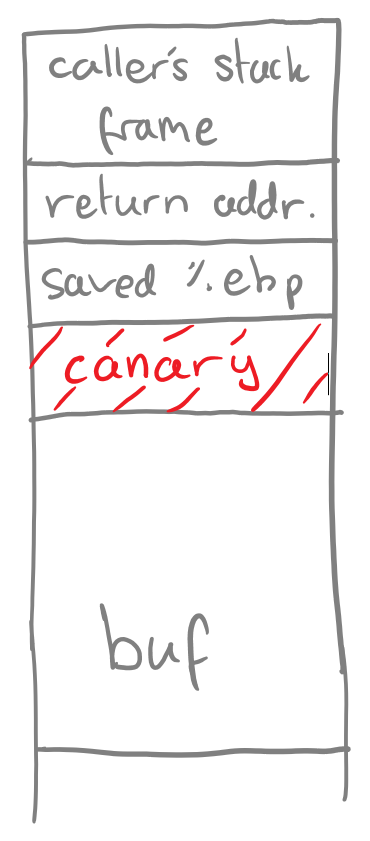

Buffer Overflow Protection
Below is a list of various methods to avoid buffer overflows from occurring - more specifically using C language.
Avoid Unsafe Functions
Functions such as gets(), sprintf(), strcpy(), and strcat() are unsafe because they all encourage some
form of stack frame overwrite that can induce a buffer overflow. For example, strcpy() will copy a string
into a buffer until the null character is found - regardless of the declared size of the buffer - easily
inducing overflow if the user is not conscious of their buffer and input size.
Users should avoid these functions if possible and look for alternatives such as their corresponding 'n'
versions: fgets(), snprinft(), strncpy, and strncat(). These alternatives require an extra argument being
the number of characters (or bytes) that the user wishes to be interacted with - rather than simply relying
on the presence of a null character or not. This forces the user to know the bounds in which they are working.
Bound Checking
In addition to the practices mentioned previously, users should also be aware of the bounds of their program
and the limitations of the functions they are using. For example, while the 'n' functions listed above require
more information, if the user supplies incorrect information, they will do nothing to prevent a buffer overflow
(e.g. giving the wrong number of characters). Due to this, it is imperative that the user is aware of how these
functions work and what the limitations of their buffers are to prevent an overflow. I can tell you from experience
that the most overlooked source of overflow is the null character. It is very often not accounted for in expected
buffer sizes and hence is often the cause of 1-byte overflows which are equally as dangerous as a full stack overflow.
Canaries
Just as canaries were kept in coal mines to warn for the presence of toxic gases,
the same method can be used in computer memory to warn for the presence of a buffer
overflow. The concept is quite simple - place a known value in between the buffer (what
can cause overflow) and the stack frame metadata (what we want to protect) (refer to
Figure 1).

Since the value is known to the machine and not to the attacker, the machine can simply
check if the value has been modified after the callee function finishes and if it has,
the program exits safely (overflow), and if not, it continues as normal (no overflow).
The security of this defence depends on the value of the canary chosen. If the value is
easy to guess or can be created naturally as a memory location - this defence is weakened.
The value of the canary should be changed for each function call (to avoid it being
brute-forced) and should be difficult to guess for an attacker.